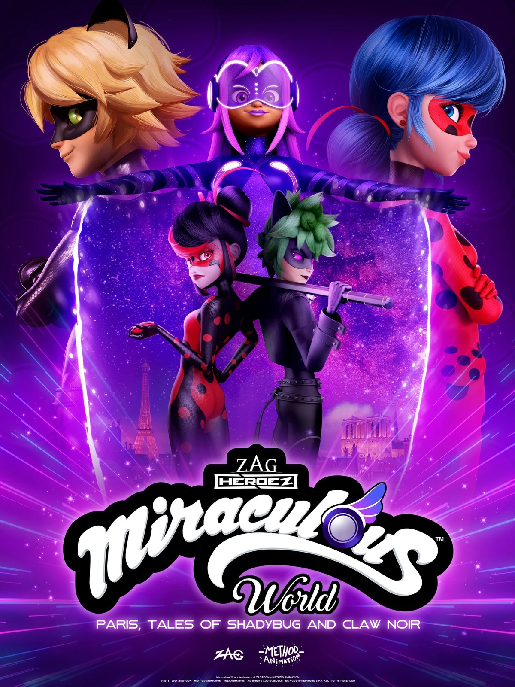
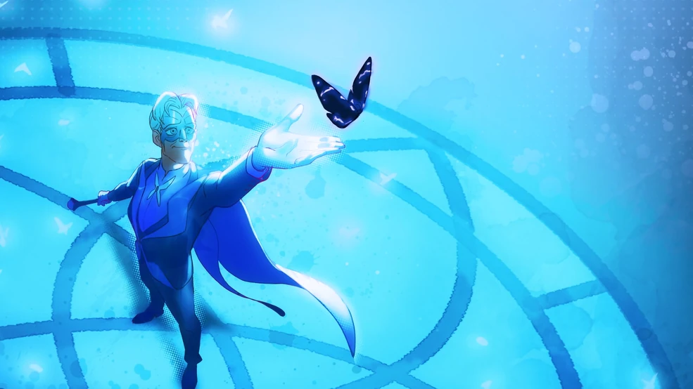

Shadybug e Claw Noir são as versões sombrias e góticas de Ladybug e Cat Noir vindas de uma dimensão paralela. Motivados por traumas e sofrimento em sua própria realidade, a dupla usa os poderes da Criação e da Destruição para espalhar o medo e buscar o poder absoluto.
Vilões implacáveis no início, eles chegam à Paris original para roubar o Miraculous da Borboleta. No entanto, ao serem confrontados com a empatia e a compaixão dos heróis originais, eles percebem que o ódio não é o único caminho e passam por um emocionante processo de redenção.

